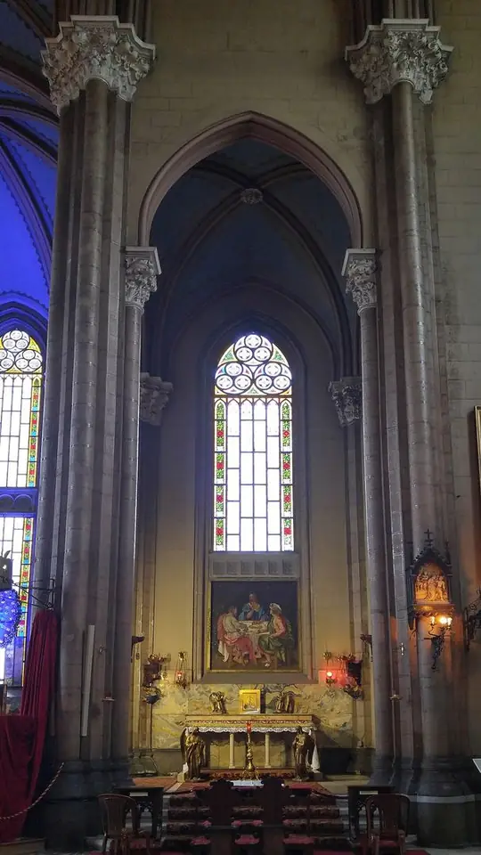
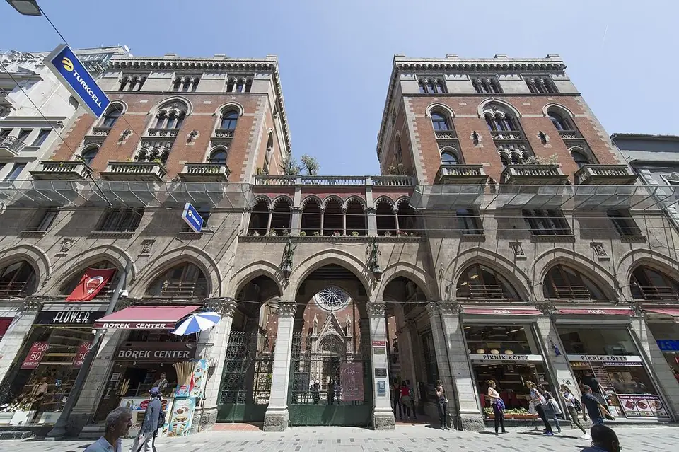

Kiliseler, Mezarlıklar ve II. Jean Paul
Sent Antuan Bazilikası
Bu bazilikadaki Polonyalı Fransisken rahip hem Türkiye'deki Polonyalıların papazı hem de Polonezköy kilisesinin sorumlusu; sonradan papa olacak XXIII. Ioannes da on yıl burada vaaz verdi.

.jpg){kind=link}
- Semt
- Beyoğlu
- Dönem
- 1906–1912
- Ziyaret
- Ziyarete açık
Hikâye
İstiklal'in kalabalığında, dükkânlarla nostaljik tramvay arasında, İstanbul'un en büyük Katolik kilisesinde her pazar Lehçe bir ayin yapılıyor.
Buradaki ilk Sent Antuan Kilisesi'ni 1725'te İtalyan cemaati yaptırmıştı. Bugünkü kırmızı tuğlalı, Venedik neogotik üslubundaki bazilika 1906-1912 yılları arasında şehrin Levanten İtalyanları tarafından mimar Giulio Mongeri'nin projesiyle inşa edildi. Caddeden bakınca önündeki apartmanlar onu gizler; içeri, bir kapıdan avluya geçilerek girilir. Türkiye'deki Vatikan temsilcisi, sonradan Papa XXIII. Ioannes olan Angelo Roncalli on yıl boyunca burada vaaz verdi; heykeli avluda duruyor.
Polonyalılar için burası özel bir kilise. Bu kilisede, Konventüel Fransiskenlerin Varşova eyaletinden rahiplerin yürüttüğü, Türkiye'deki Polonyalılara özel bir parokya bulunuyor. Parokyanın rahibi aynı zamanda Polonezköy'deki (eski Adampol) Częstochowa Meryem Ana Kilisesi'nden de sorumlu; bu köy 1842'de Polonyalı göçmenler tarafından kurulmuştu. Böylece metropolün kalbindeki kilise ile Boğaz'ın Anadolu yakasındaki köy aynı rahibi paylaşıyor; 19. yüzyılın sürgünleri ile bugünün Polonyalıları aynı sunakta buluşuyor. Polonya Cumhurbaşkanı Andrzej Duda 2021'de dönemin rahibi Peder Michał Sabatura'ya Türkiye'deki Polonyalılara hizmetleri için Gümüş Liyakat Haçı verdi.
Lehçe ayin çoğunlukla alt kilisede yapılıyor; 2024 Paskalya programında “Po Polsku (Kościół dolny)” yani “Lehçe (alt kilise)” diye geçiyor. İstanbul'un bugünkü Polonyalı cemaatini görmek için en uygun yer herhalde burası: öğrenciler, karma aileler, şirket çalışanları ve pazar sabahı caddeden gelip kendi dillerinde dua eden ziyaretçiler.


Nasıl gezilir
Giriş, İstiklal Caddesi 171 numarada, apartmanların arasındaki kapıdandır; kilise genellikle gün içinde açık. Pazar günkü Lehçe ayinin saati zaman içinde değişti: Cornucopia rehberi 9.30, başka kaynaklar alt kilisede 11.30 diyor; gitmeden önce güncel saati kiliseden ya da Polonya Başkonsolosluğu'ndan öğrenin. Ayin sırasında sessiz olun ve fotoğraf çekmeyin. Avludaki XXIII. Ioannes heykeline bakmayı unutmayın.
Kişiler
- Giulio Mongeri
- Angelo Roncalli (Jan XXIII)
- o. Michał Sabatura OFMConv
Konum
Beyoğlu, İstanbul · Koordinatlar: 41.03228, 28.97720